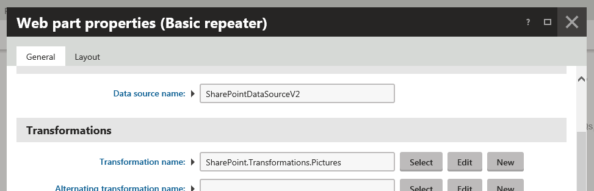
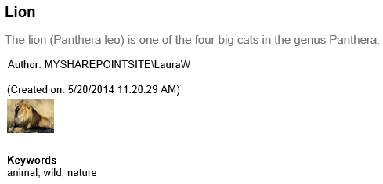

Displaying SharePoint data in Kentico
The system uses the SharePoint data source web part to retrieve the requested SharePoint data, and displays this data through another web part placed on the same page, e.g. the Basic repeater web part.
The SharePoint data source web part loads the data based on:
specified SharePoint server connection
-AND-
specified data retrieval mode.
Displaying SharePoint data in Kentico
To display SharePoint data on a Kentico website, you need to:
Configure a SharePoint integration connection.
Configure the SharePoint data source web part.
Add a content displaying web part into a page containing the SharePoint data source web part.
You can use the Basic repeater web part.
Configure the content displaying web part.
Specify the data source.
The data source name must be the value of the Web part control ID property of the SharePoint data source web part.
Specify the transformation.

If you now preview the page, the system displays the requested SharePoint data.
Example

Viewing SharePoint data
In the above example, the content displaying web part uses the following custom Picture library items transformation.
<h2><%# Eval("Title") %></h2><p><%# Eval("Description") %></p><%-- 'Author' is a lookup field containing ID and value separated by semicolon. --%>Author: <%# Eval("Author").ToString().Split(new[]{';'})[1] %><br />(Created on: <%# Eval("Created") %>)<br /><img src="<%# GetSharePointImageUrl() %>" /><h5>Keywords</h5><%# Eval("Keywords") %>Based on the transformation definition and configuration of the SharePoint data source web part, the system displays the following SharePoint item information:
title
description
author (preceded by 'Author:'; consists of domain name and user name, separated by a backslash)
date of creation (in brackets; preceded by 'Created on:')
image file
keywords (preceded by the 'Keywords' heading)
You can find SharePoint transformations in Page types -> Page types while editing the SharePoint - Transformations page type on the Transformations tab.
You can customize these transformations, and you can also add your custom ones.
See Creating transformations for pages for further details.
Available methods
The system allows you to call from the transformation the following methods with optional parameter values:
If you need to resize images and control their caching, use the GetSharePointFileUrl() method. This is because the method's respective parameter values override the settings as configured in Settings -> Integration -> Microsoft SharePoint.
GetSharePointFileUrl()
The full syntax of the GetSharePointFileUrl() method is
public string GetSharePointFileUrl(string fileRefColumnName = null, int? cacheMinutes = null, int? cacheFileSize = null, int? width = null, int? height = null, int? maxSideSize = null)|
Parameter name |
Default value if not specified |
Description |
|
fileRefColumnName |
"FileRef" |
Specifies the name of the column containing the name of the file. |
|
cacheMinutes |
configured in Settings -> Integration -> Microsoft SharePoint |
Specifies how long the file is cached on the web server machine. |
|
cacheFileSize |
configured in Settings -> Integration -> Microsoft SharePoint |
Files bigger than cacheFileSize kB are not cached. For resized images, the size of the resized image is used. |
|
width |
none |
Only affects images. The system resizes the image to have maximum width equal to width in pixels. |
|
height |
none |
Only affects images. The system resizes the image to have maximum height equal to height in pixels. |
|
maxSideSize |
none |
Only affects images. The system resizes the image to have maximum side size equal to maxSideSize in pixels. |
|
Implementation example |
Description |
<%# GetSharePointFileUrl() %> |
The system caches the files as configured in Settings -> Integration -> Microsoft SharePoint. The name of the column containing the name of the file is FileRef, which can be used, for example, while working with picture libraries. |
<%# GetSharePointFileUrl("NameOfColumnContainingPathToFile") %> |
The system caches the specified files as configured in Settings -> Integration -> Microsoft SharePoint. |
<%# GetSharePointFileUrl("NameOfColumnContainingPathToFile", 5, 1024) %> |
The system caches the specified files up to the size of 1024 KB for 5 minutes. |
GetSharePointImageUrl()
The full syntax of the GetSharePointImageUrl() method is
public string GetSharePointImageUrl(string fileRefColumnName = null, int? width = null, int? height = null, int? maxSideSize = null)|
Parameter name |
Default value if not specified |
Description |
|
fileRefColumnName |
"FileRef" |
Specifies the name of the column containing the name of the image. |
|
width |
none |
The system resizes the image to have maximum width equal to width in pixels. |
|
height |
none |
The system resizes the image to have maximum height equal to height in pixels. |
|
maxSideSize |
none |
The system resizes the image to have maximum side size equal to maxSideSize in pixels. |
|
Implementation example |
Description |
<%# GetSharePointImageUrl() %> |
The system caches the images as configured in Settings -> Integration -> Microsoft SharePoint. The name of the column containing the name of the image is FileRef, which can be used, for example, while working with picture libraries. The system does not resize the images. |
<%# GetSharePointImageUrl("NameOfColumnContainingPathToFile") %> |
The system caches the specified images as configured in Settings -> Integration -> Microsoft SharePoint. The system does not resize the images. |
<%# GetSharePointImageUrl("NameOfColumnContainingPathToFile", null, 200) %> |
The system caches the specified images as configured in Settings -> Integration -> Microsoft SharePoint. The system resizes the images to have maximum height of 200 pixels. The image width is determined dynamically to preserve the image aspect ratio. |
<%# GetSharePointImageUrl("NameOfColumnContainingPathToFile", null, null, 300) %> |
The system caches the specified images as configured in Settings -> Integration -> Microsoft SharePoint. The system resizes the images to have maximum size of any side 300 pixels. |
You can skip any parameter, or you can enter null instead.